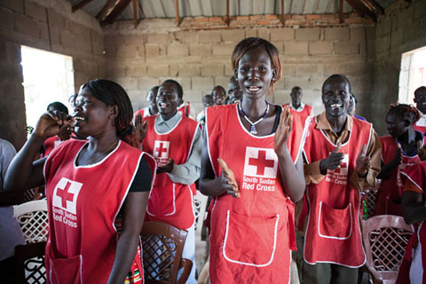
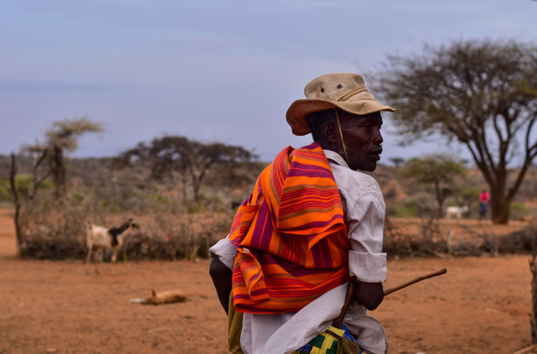
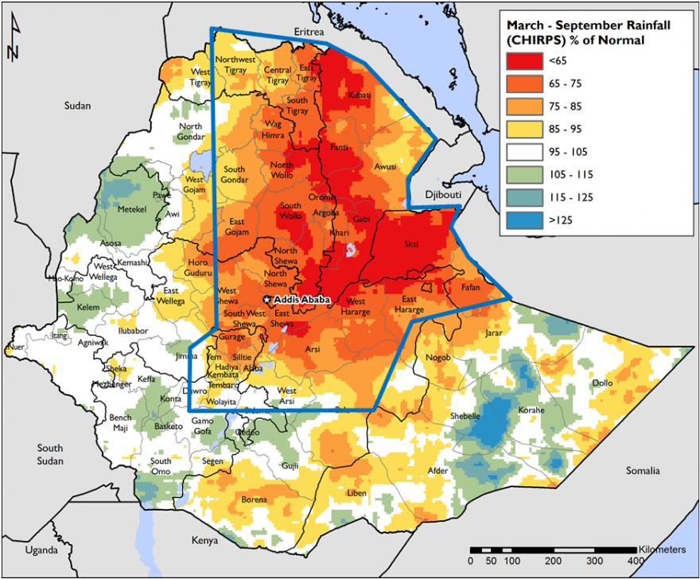
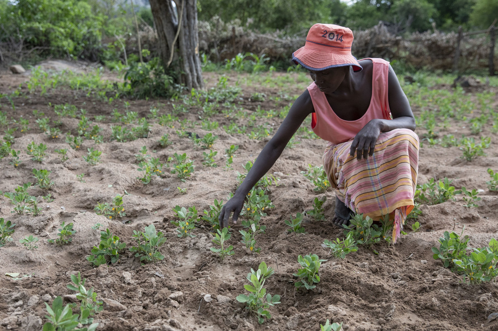
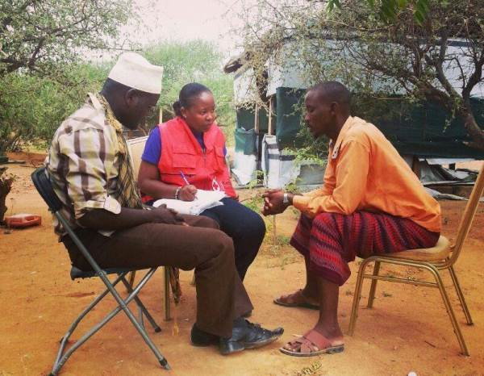
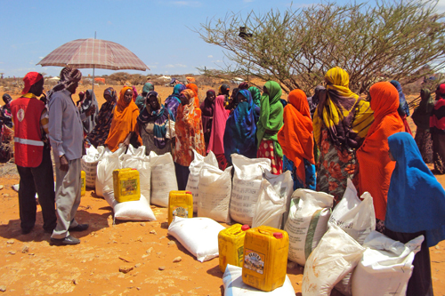
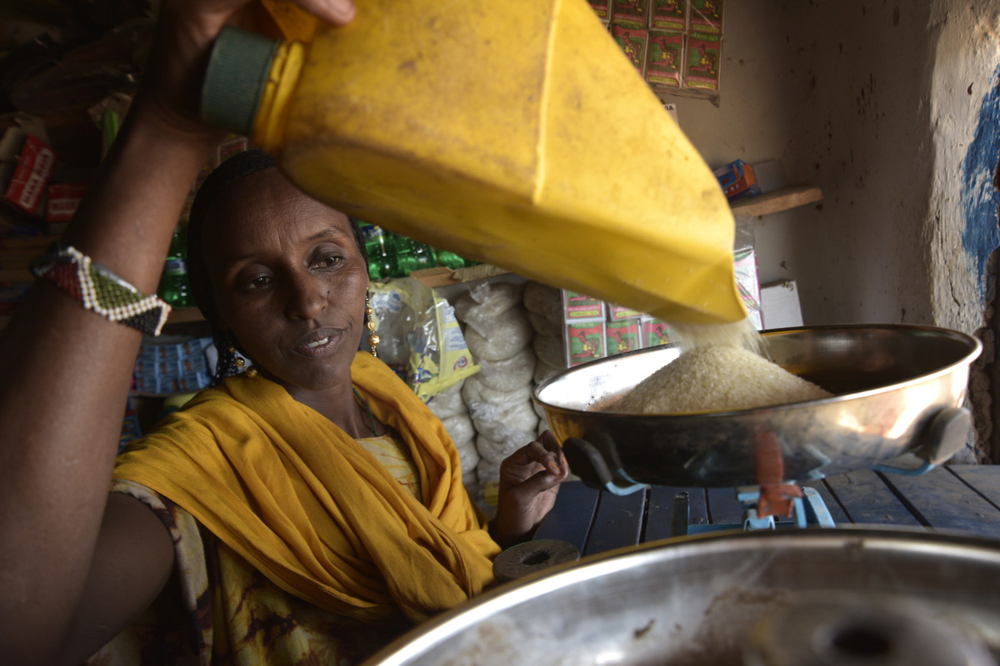

Insights from the International Center for Humanitarian Affairs East Africa Drought Research
Press right on your keyboard or swipe right to navigate
Over the last year, the International Center for Humanitarian Affairs (ICHA), supported by British Red Cross and other Movement partners, have been carrying out research into the 2016-17 drought crisis in East Africa, and how the Red Cross and Red Crescent Movement responded.
By speaking to dozens of people, and reviewing hundreds of documents, the research (which can be read in full here) has led to a series of insights about how National Societies and Movement partners can better prepare for, and respond to, future drought events.
Each of the 11 insights is shown on the following pages, along with the evidence from the research that led to these insights, and links to resources that give further information and guidance.
Each page will describe an insight from the research. If you want to find out more about the evdience behind the insight press down on your keyboard or swipe down. There you will also find more information and links to resources providing further reading, learning materials and related content.
When you press or swipe down, more information will appear in pages like this.
Click below to jump to a section
Research Insights
Investing in DM capacity-building led to improved NS response, and partners should be called on to support with this
Kenya Red Cross' DM strengthening project improved the technical skills of staff and volunteers; causing faster response time, wider reach, decentralization of interventions, better data collection and reporting.
Press down for more
The preparedness of ICRC and Somali Red Crescent in terms of funding, volunteer networks and emergency stocks, allowed them to make a faster and more impactful response than most other responders.
Press down for more
In Ethiopia, training of NS staff and volunteers on community based health and first aid CBHFA improved the quality of response. In some affected areas, the NS were the only operating humanitarian responder.
Press down for more
In Kenya, increasing staff and volunteers' technical capacities and creation of RCATs in different branches, increased the reach and efficiency of interventions.
Press down for more
Training community volunteers on WASH proved to be very effective, especially in Somalia.
Press down for more
Procurement of essential equipment and items was challenging for some NS, , due to lack of proper procurement mechanisms, proper logistical information and established linkages with suppliers.
Press down for more
PER:
Safer Access:
http://saferaccess.icrc.org/Engaging with external coordination mechanisms helps ensure effective response and positioning for the National Society

A cross-sector cash coordination group was established as part of the preparation and planning phase.
Effective multi-sectorial and multi-agencies coordination resulted in better quality and timeliness of preparedness measures, especially in Kenya and Ethiopia.
Press down for more
A consortium approach was best implemented in Ethiopia, as external partners were able to coordinate. Somalia pooled their resources and shared information, which led to minimal duplication in the same areas of intervention. In Somalia the cluster coordination worked well at 'meetings level' (if not operational level due to low capacity local organisations).
NS should join consortiums to have more collaboration with external partners and to improve coordination and strengthen complementarity within the humanitarian world.
Press down for more
Leveraging on their auxiliary role to the government, NS should lobby and engage the government to central to drought management (Sic), resilience agendas and provide centrifugal force to other sector actors. This will ensure actors work collaboratively for effective service delivery and encourage political goodwill; critical in timely intervention and resilience building.
Press down for more
In some responses, ineffective coordination led to duplication of efforts with other agencies.
Multi-stakeholders' coordination and multi-sectoral approach was successful in strengthening the response measures in Ethiopia and Somalia.In Kenya, increasing staff and volunteers' technical capacities and creation of RCATs in different branches, increased the reach and efficiency of interventions.
Press down for more
Collaboration was essential for humanitarian organizations to have an impact at grassroots level. Lack of information sharing made coordination challenging in Kenya, which led to duplication especially in CTP.
Press down for more
Consortiums and cluster groups are important for coordination, cooperation and encourage joint fundraising. The RCRC movement should deliberately and actively be involved in consortiums and clusters throughout operations.
Press down for more
OCHA Coordination:
Including early warning and early action in preparedness plans brings results
Weather and climate forecasts have become more reliable and available at global, regional and national level. This supported strong action and preparedness following severe drought warnings in late 2016.
Press down for more
Ethiopian Red Cross worked closely with the meteorological department to undertake situational analysis and strengthen its preparedness activity.
Press down for more
Kenya Red Cross was able to utilise information from a variety of sources, including the Kenya Meteorological Departments and FEWSNET. This allowed them to begin responding and mobilizing resources in October 2016, four months before the government declared the drought a national disaster.
Press down for more
FEWSNET:
VAM: https://vam.wfp.org/
Food Security Information Network: http://fsinplatform.org/
Having sound Standard Operating Procedures and contingency plans helped achieve an effective response
Kenya Red Cross had worked with IFRC to put together a plan of action in 2015; this plan provided a basis for the 2016/17 response, and allowed for quick planning and resource mobilization.
Press down for more
Kenya Red Cross branches in Arid and Semi-Arid Lands (ASALs), developed county contingency plans with county governments, in preparation for the forecasted drought, which allowed them to respond faster and more effectively.
Press down for more
In early 2016, KRCS prepared for drought through capacity building of the RCAT and National Disaster Response Team (NDRT). Training included conducting rapid assessments using the Kenya Inter-Agency Rapid Assessment (KIRA) tool, monitoring of drought situations and putting in place contingency plans. The KRCS developed the response tools; Document Management Framework (the hierarchy of documents); SoPs for drought and RCAT guidelines. These were critical during response, making response organized and well-coordinated.
Press down for more
IFRC contingency planning guide:
https://www.ifrc.org/PageFiles/40825/1220900-CPG%202012-EN-LR.pdf
Response plans and preparedness measures should utilise volunteer network of the Movement, and the links that NS have to local government and community structures
Branch and community level Disaster Response Teams - reduced the time it took for information to be shared with headquarters, deployment and response times
Press down for more
KRCS branches in areas at risk of drought developed county contingency plans with county governments, in preparation for the forecasted drought. Maternal, Newborn and Child Health (MNCH) and Monitoring and Evaluation groups were established to monitor the situation on the ground.
Press down for more
DM strengthening project improved the technical skills of staff and volunteers leading to faster response time, wider reach, decentralization of interventions, better data collection and reporting.
Press down for more
In Ethiopia, the volunteer network allowed the NS to be the only actor present in some affected areas.
Press down for more
In Somalia, Community Based Organisations and their Community Actions Plans were context specific and relevant; informing context-specific coordination, assessments and actions.
Press down for more
Community Engagement Hub:
https://www.communityengagementhub.org/
The case for complementarity:
https://www.icrc.org/en/download/file/88335/the-case-for-complementarity-report.pdf
Drought is a cyclical disaster, so it is necessary to invest in prepositioned stock and allocate funds ahead of future responses. Flexible funding streams are essential, allowing NS to respond quickly.
A lack of funds to undertake their own immediate assessment and response was a barrier for all NS.
Pre-positioned stocks were very useful in Somalia, where ICRC used them as part of the first line response.
Press down for more
More early action would have been possible if partners had budgeted more flexibly within their multi-year funding and made a stronger case to back donors for doing so.
In Somalia, constant presence of ICRC and major donors such as ECHO, along with good cluster coordination, meant they were able to respond to the drought efficiently because of emergency reserve funds.
Press down for more
More widespread use of various flexible funding mechanisms within long-term development and resilience budgets and programs, would have supported the drought response.
National Societies need to invest more in Forecast-based Action and Forecast-based Financing in addressing drought in this region, since weather and climate forecasts have become more reliable, skillful and widely available at global, regional and national level.
Press down for more
NS need to adopt some of the early warning systems developed by other actors as tools and information for preparedness and response to drought. For example, the Predictive Livestock Early Warning System provides a closer picture of the impact of drought on key grazing areas and reflects the trends in forage recovery.
Disaster preparedness has increased regionally to enhance effective disaster response and management. For example, at the global level through the EWEA Ethiopia, Kenya and Somalia, critical situations are flagged quarterly, and this information is used to provide recommendations on early action in agriculture and food security.
Press down for more
IFRC preparedness library:
There is a need to invest in long term programmes that reduce community risk to drought, and to merge these programmes with response operations.
Although there was no documented evidence on the role the livelihoods and resilience projects implemented by RCRC Movement after the 2010/2011 in drought preparedness, close observation of areas badly hit by the 2015/2017 drought indicated that these projects had a positive effect. In Kenya, places where preparedness activities involved building and repairing infrastructures such as boreholes and clinics, showed higher absorption rates in terms of dealing with the shocks, than areas that did not have resilience projects.
Press down for more
In Somalia, where clinics that had been upgraded and equipped after the 2010/2011 drought were able to handle more AWD outbreak patients and treatment was done in a timely manner which saved more lives than previous times.
Press down for more
Evidence shows that long term programming has more positive impact on communities and national societies. Explore how short-term responses can be designed to merge into bigger development goals, once the emergency phase has ended. Donors should also be encouraged to fund long term programs in disaster prone areas so as mitigate the risks.
Press down for more
Link:
NS should explore how best to work with governments on the declaration of drought and food emergencies, promoting the use of objective tools and triggers, rather than political decisions.

Due to contingency plans and DM strengthening, the Kenya Red Cross started emergency response months before the national government declared the drought a national disaster.
Press down for more
Due to contingency plans and DM strengthening, the Kenya Red Cross started emergency response months before the national government declared the drought a national disaster.
Press down for more
British Red Cross report "the case for complementarity" report:
https://www.icrc.org/en/download/file/88335/the-case-for-complementarity-report.pdf
Somalia NGO Consortium, Principles into Practice: Aid Localisation in Somalia
Taking advantage of the auxiliary role can grant access to otherwise unreached vulnerable populations

SRCS' auxiliary role to government and accepted among communities, has helped implementing responses (in some areas the SRCS was the only organization operating).
Press down for more
Due to the volunteer network, Ethiopia Red Cross was able to be the only humanitarian actor in some areas
Press down for more
Kenya RC has used its auxiliary role to coordinate with government at national, regional, and community level, including in preparedness activities
Press down for more
Link:
Cash based assistance is an efficient and effective means of supporting drought-affected communities.

Capacity assessment on cash preparedness, helped improve CTP because systems were put in place to ensure the effectiveness and efficiency of the modality
Red Cross Action Team (RCAT) responsible for responding to disasters in three counties prone to drought (Tana River, Isiolo and Turkana), were trained in Cash Transfer Programming (CTP) and livestock management. This proved useful during the response phase.
Press down for more
It is evident from the findings that response to drought using cash worked well in most parts, thus this can be enhanced by using cash as a preparedness modality before drought strikes. Leveraging on the existing social protection programmes such as the Hunger Safety Net in Kenya which operates in drought prone areas and has experience in scaling up additional recipients in drought emergencies, National Societies can help scale up cash transfers to reduce or manage human and economic losses as a result of drought through the delivering of cash before disaster as a social protection measure while using these programmes as scalable platforms that can support people affected by drought more effectively
Press down for more
The NS can also adopt technologies that will enhance their response such as the use of Blockchain technology in Cash Transfers. In 2018, KRCS piloted blockchain technology during drought response in Isiolo County
RedRose data management platform was used in managing all aspects of the project cycle in just ten days, consent, disbursement and post-distribution monitoring was done proving that CTP delivery can be timely and up scaled
Press down for more
CTP helped families assist themselves; majority used money to buy food and medication.
Innovation and technology improved the quality of preparedness and the impact of interventions at community level
Press down for more
CTP proved to work well especially in Kenya and Somalia
CTP was revolutionary as a response modality to drought, especially where markets were functioning, and mobile technology was accessible.
Press down for more
Cash Hub:
Cash In Emergencies Toolkit:
Ensuring that Movement partners agree roles and responsibilities before a crisis takes place leads to a strengthened response
Effective collaboration between IFRC and Kenya Red Cross during 2015 allowed for a successful expansion of activities following when the drought conditions worsened in 2016/17
Press down for more
The lack of a strong IFRC presence in Ethiopia hampered coordination with the NS, and diminished the effectiveness of the IFRC emergency appeal
Press down for more
In all countries, PNS partners helped resource mobilization, trainings, planning and response. When the IFRC lacks capacity to undertake necessary preparedness or response measures, pre-decided and coordinated consortium PNSs should fill the gaps
Press down for more
Members of the Africa Drought Management Advisory Group (ADMAG) have unanimously agreed that more efforts need to be put towards strengthening movement coordination and cooperation and building NS capacities
Press down for more
Despite the fact that we are a movement, we lack the means to come together achieve purposeful scale and impact. Other agencies can quickly form coalitions and consortium and go for funding opportunities. For example, in Somalia there is an NGO cash consortium of approximately 7-8 agencies led by Concern Worldwide funded by ECHO. They quickly formed, reached agreement, identified their added value, and implemented.
Press down for more
Procurement of essential equipment and items was challenging for some NS, , due to lack of proper procurement mechanisms, proper logistical information and established linkages with suppliers.
Press down for more
SMCC Toolkit: